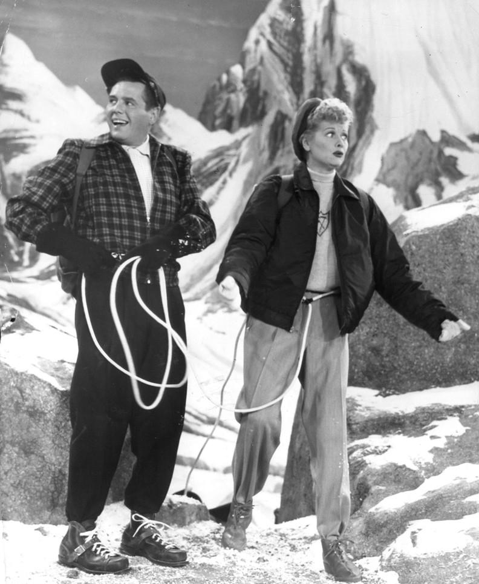
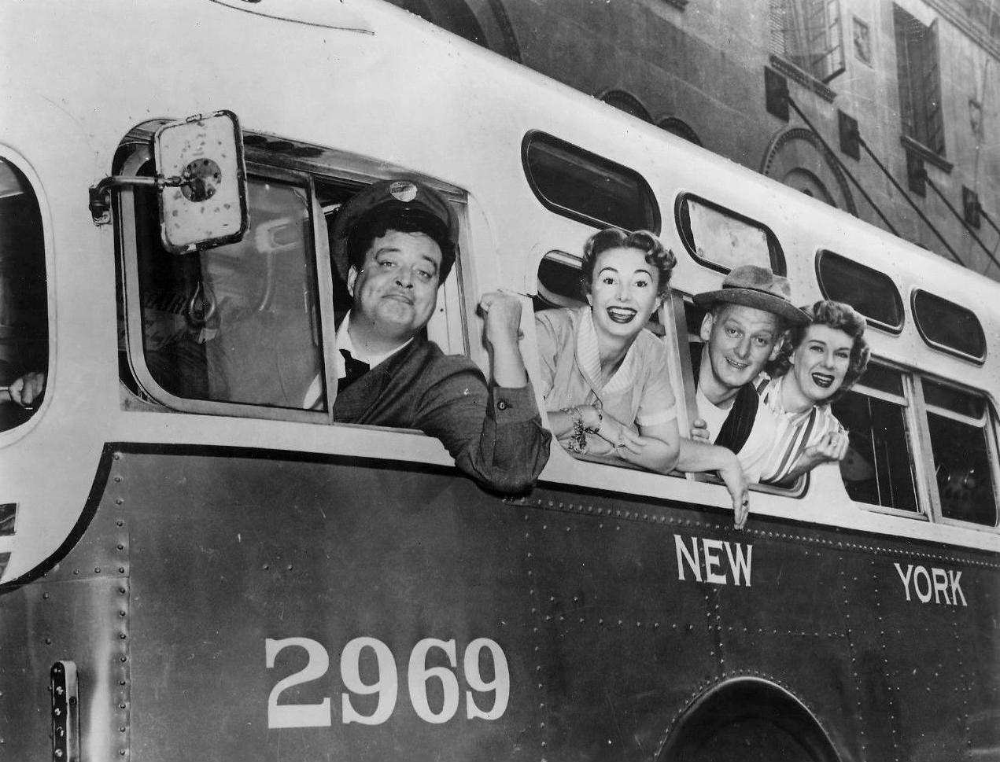

1 The 1950s
Sitcoms from the 1950s had a distinct “theatre” feeling to them, as if plucked up from a variety show. We’ll look briefly at two of the giants of Sitcoms from the 1950s: I Love Lucy and The Honeymooners.
When watching these clips, keep the following things in mind:
- How are the characters acting? Does it feel like a staged production like a play? Do you believe that the characters like each other? How do characters act when they’re speaking to each other (looking each other in the eyes, etc.), and how do characters act when they’re in the background in a scene?
- Notice when the characters make an error (say a slightly wrong thing, speak over laughter). How do they repair that damage?
- Notice how they play to their audience who would, at that time, be middle-class Americans who owned a TV set.
- Notice that many of these scenes could be their own sketches if isolated from the show.
1.1 Sketch-like Scenes
Some of our favorite, most memorable sitcom scenes also work as stand-alone sketches. These scenes will have the following structure:
- The rules are defined.
- The stakes are described.
- A problem comes up.
- Some soutions are attempted.
- The situation resolves or the scene ends.
The sketch-scene pattern: Rules, Stakes, Problem, Solutions, Resolution.
We’ll see this played out below.
1.2 I Love Lucy

I Love Lucy is an American sitcom which began airing in 1951 and ended after 6 seasons (180 episodes). The show is set in an apartment building in NYC where Lucy and Ricky Ricardo rent an apartment from their landlords and best friends Fred and Ethel Mertz.
There are a number of common things that I Love Lucy does which other sitcoms also tend to do:
- Sets up a problem (or two) for the episode with a clear, unambiguous problem statement.
- “Lucy, every single month your bank account is overdrawn!” Ricky implies that Lucy doesn’t appreciate money which leads to Lucy and Ethel going to work in a factory to learn the value of a dollar while Ricky and Ethel do the housework. At the end, everyone realizes that the other does a hard job and deserves respect.
- The use of catch phrases.
- “Lucy, you got some ‘splainin’ to do!”
- Caricatured, broad characters.
- Ricky is the protoypical “fish out of water” in that he is Cuban-American. This is used to comedic effect when he doesn’t quite know the correct English terms for things.
- Lucy is a mischievous wife who is always getting into trouble and going behind her husband’s back to get what she wants.
- Scenes which are functionally sketches.
To illustrate this last point, the Chcolate Factory Assembly Line — one of the most famous scenes from I Love Lucy — is functionally a sketch and could stand even if we didn’t know much about the characters.
Remember, from above, that we have:
- Rules: they’re at an assembly line that they have to keep up with.
- Stakes: they need to do this correctly to keep their jobs.
- Problem: the assembly line starts going too fast.
- Solutions: eating the candy, putting the candy in front of them, etc.
- Resolution: in this case, the scene ends without a strong resolution.
Another famous sketch-like scene is the Vitameatavegimen Commercial.
- Rules: she needs to listen to the director and do her lines correctly in the commercial.
- Stakes: she only gets paid if she does well.
- Problem: she starts getting tipsy after drinking some of it and can’t perform well
- Solutions: she attemps to act through her tipsiness.
- Resolution: in this case, the scene ends without a strong resolution.
Notice this also uses a phrase to call the audience back to how silly the scene is getting: “It’s so tasty, too!”
1.3 The Honeymooners

Derived from Jackie Gleason’s sketch comedy show of the same name, The Honeymooners is about the daily lives of bus driver Ralph Kramden (notice the “blue collar” appeal to this!) and his wife Alice, along with their friends Ed and Trixie Norton. Notice the similarities to I Love Lucy: a married couple and their married friends get into zany schemes and problems. The Honeymooners also takes place in NYC.
We have similar “tools” as I Love Lucy:
- Setting up a problem (or two) for the episode with a clear, unambiguous problem statement.
- The use of catch phrases.
- “One’a these days, Alice… Bang, Boom, Straight to the Moon!”
- Caricatured, broad characters.
- Scenes which are functionally sketches.
Similar to above, we’ll look at two scenes. The first is the famous Mambo scene, where Ralph does not want to learn the Mambo with Alice. The second is Blabbermouth where Ralph says nothing for the first three minutes of the sketch.
Notice that there is a fair amount of physicality and clown-like movement in these (as well as in Lucy’s).